Projects
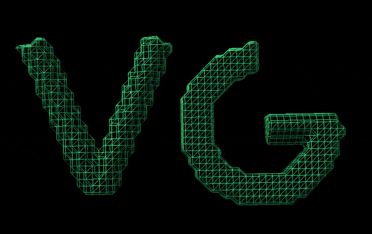
volgrids
[Python] Framework for volumetric calculations, with emphasis in biological molecular systems.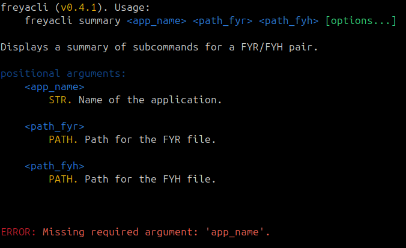
freyacli
[Python] Python CLI framework with well defined argument rules and automatic help string generation.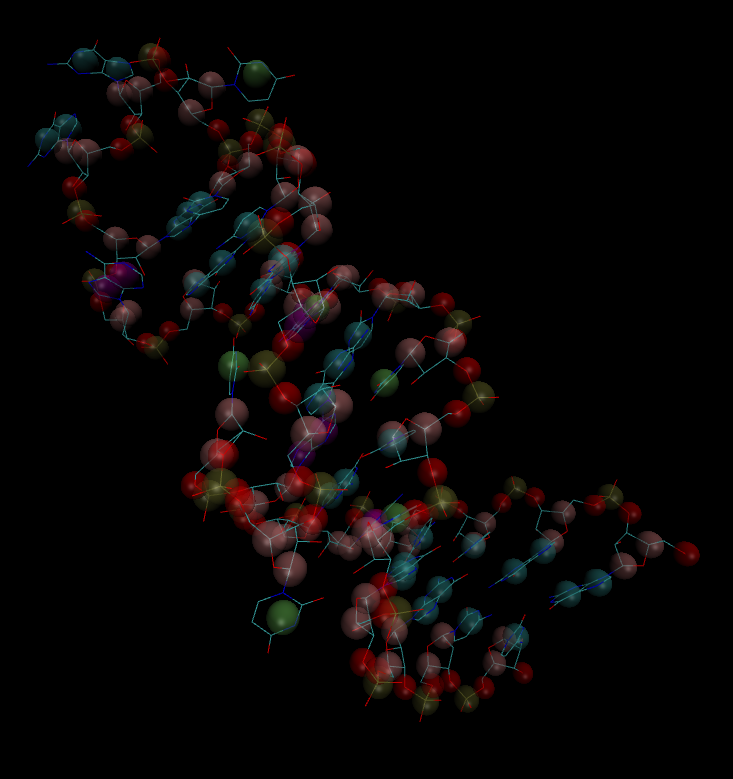
hire2fa
[Python] Utility for reconstructing all-atom structures from HiRE coarse grained model representation.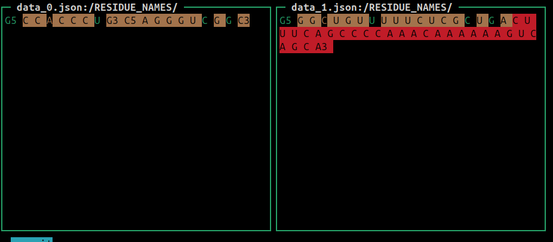
docprisma
[Python] Tool for fast inspection and comparison of JSON files inside the terminal.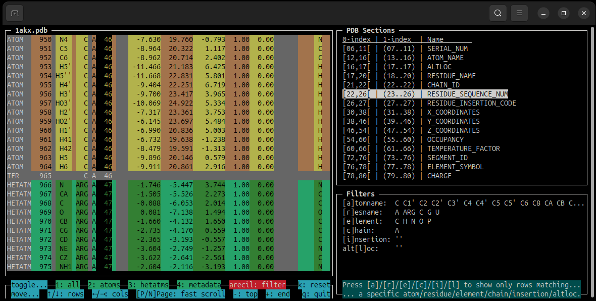
molprisma
[Python] Tool for fast inspection of PDB molecular files inside the terminal.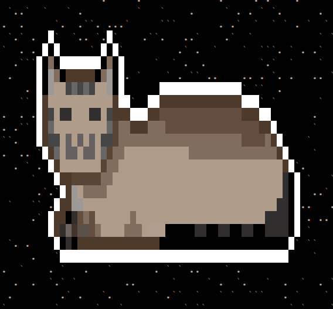
prismatui
[Python] Python TUI framework based on the idea of "multi-layered transparency" composition.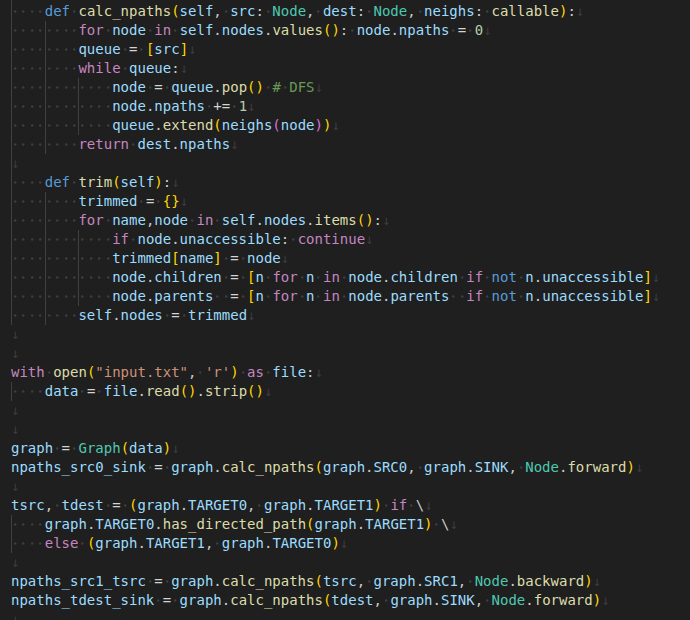
code-challenges
[Python] My solutions for "Google foobar" and "Advent of Code" coding challenges.novemberff
[Python] Custom implementation of the AMBER forcefield energies, focused on simplicity and verbose outputs.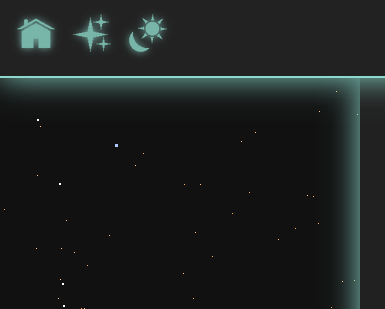
chocomint-css
[CSS] Minimal CSS framework based on "Simple CSS" (by Kev Quirk), with some extra effects.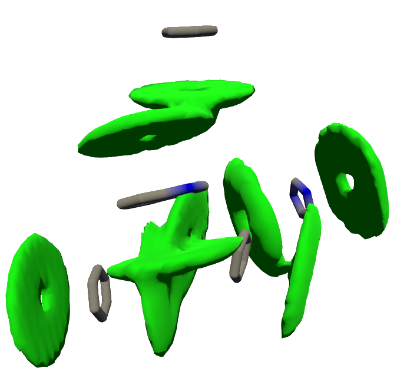
thesis-qcb
[Python] Master's Degree Thesis in Quantitative and Computational Biology titled "Physical characterization of protein and RNA binding sites and their visualization" (UniTN).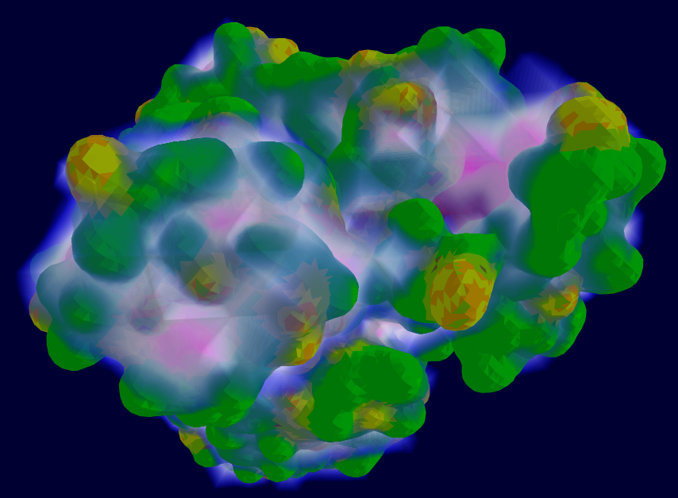
computational-biophysics-project
[Python] MD simulation of a protein and the analysis of the obtained trajectories. Final project for "Computational Biophysics" (UniTN).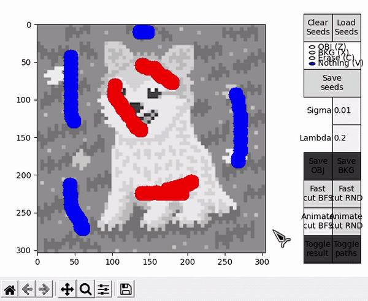